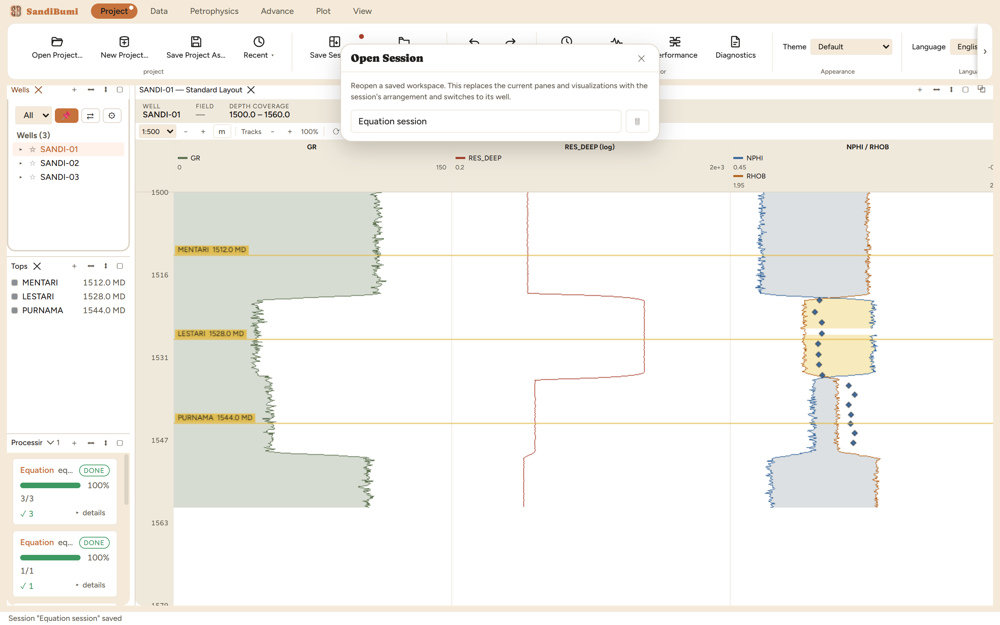

Two kinds of memory keep a workspace reproducible. A layout
remembers how a log view is drawn (which tracks, which curves, scales
and fills) under a name any log view can recall. A session
remembers the workspace itself (which panes are open, how they are
arranged, which well was live), so tomorrow morning starts where
tonight stopped. Neither is Save Project As…,
which copies the whole database; these are arrangements, saved inside the
project and costing nothing. Reach for layouts when a display is worth
repeating across wells, and for sessions at every natural stopping
point.
The pane

Open Session… over the workspace it is about to
replace. The dialog is non-blocking, so the log view behind stays
live, and each saved session is one click to reopen, with its own
delete control.
Layouts live on the Plot tab (Save Layout…, and
the Active Layout picker beside it). Saving the current log view's
arrangement under a new name reported "Layout "Guide
Workspace" saved" and the name appeared in every log view's
layout menu at once.
Sessions live on the Project tab (Save
Session… / Open Session…). The dialog states
its one consequence plainly:
Reopen a saved workspace. This replaces the current panes and visualizations with the
session's arrangement and switches to its well.
Step by step
Arrange the workspace (panes, log views, plots) the way the task
needs it.
Plot ▸ Save Layout… to name the log view's
arrangement; Project ▸ Save Session… to name the
whole workspace.
To return, Project ▸ Open Session… and click the
session's name. On the example, a workspace was saved with the
Inspector open, the Inspector was closed, and reopening the session
brought it back in place.
Reading the result
What a session carries, measured on the round trip: the pane
arrangement, each pane's identity, the selected well (set before the
layout is applied, so every recreated pane initializes on it), and each
log view's chosen named layout. What it deliberately does not carry: a
pane's transient contents. The Equation Editor reopened on its blank
new-equation state rather than the draft that was on screen when the
session was saved, and the log view's zoom scale came back at its layout
default. A session is an arrangement of tools, not a snapshot of
half-finished work inside them. Anything that must survive belongs in the
project: saved equations, saved layouts, written curves.
QC and pitfalls
Opening a session replaces, it does not merge. Panes open now
that the session does not include are closed. Save the current state
first if it is worth anything.
Layouts are project documents. They travel with the
.duckdb, so a project handed to a colleague carries its layouts
and fourteen layouts named for this guidebook's chapters came along
in the example project for exactly that reason.
The unsaved-state dot on the Project tab is the tell. Work
that would be lost with the window shows as the dot on the tab
itself; Save Session… is the cheap way to clear it at a
stopping point.